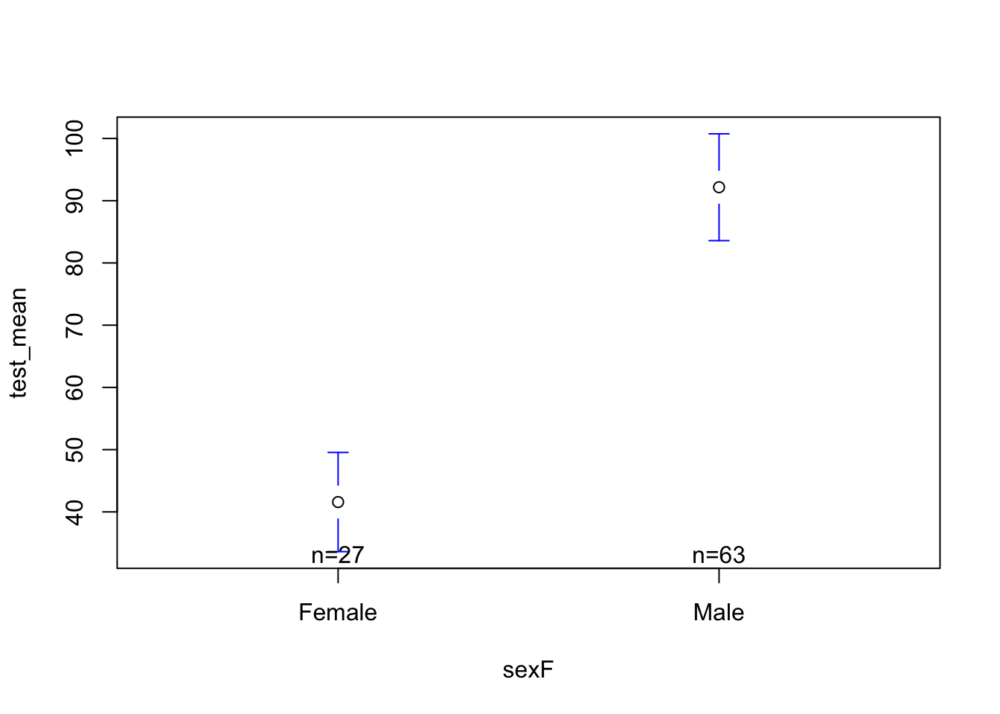
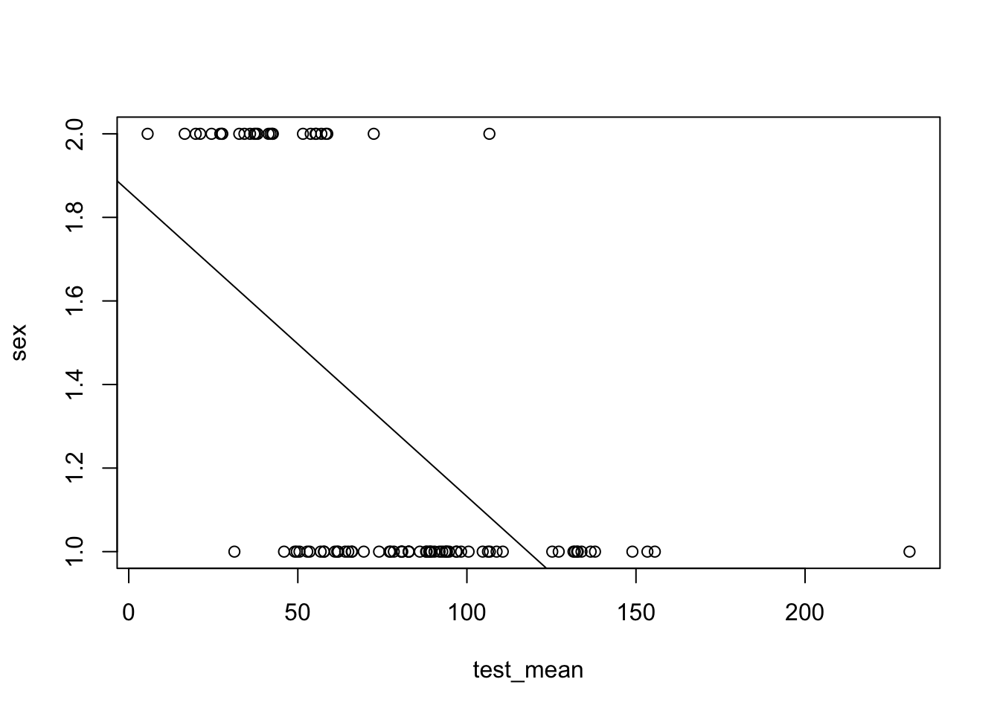
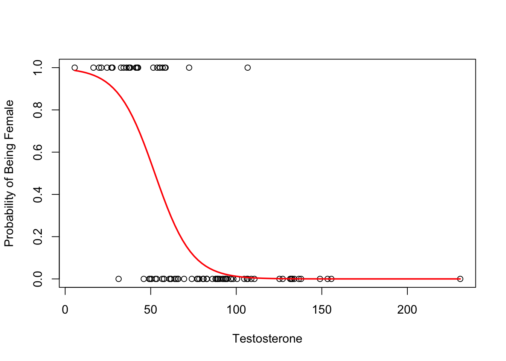

In this chapter, I’ve tried to organize a narrative about logistic regression - why we do this, how to do it in R, and how to interpret the results. This is not a topic that I will cover in the introduction to statistics class, but thought I would include it here because a) some students are interested in defining logistic regression models for their final project; b) this is a nice way to see how the “general” linear model can be “generalized” to other topics, and c) sometimes I teach on this. Feel free to reach out with questions if something is unclear on the course Discord.
Part 1 : The Theory of Logistic Regression
A Non-Logistic Example to Start
Let’s look at the hormone dataset again. Previously, we saw that sex was related to testosterone.
Code
library(gplots)
Attaching package: 'gplots'
The following object is masked from 'package:stats':
lowess
Code
h <-read.csv("~/Dropbox/!GRADSTATS/Datasets/hormone_dataset.csv")h$sexF <-as.factor(h$sex)levels(h$sexF) <-c("Male", "Female")h$sexF <-relevel(h$sexF, ref ="Female")mod <-lm(test_mean ~ sexF, data = h)plotmeans(test_mean ~ sexF, data = h, connect = F)

Code
summary(mod)
Call:
lm(formula = test_mean ~ sexF, data = h)
Residuals:
Min 1Q Median 3Q Max
-60.927 -17.886 -3.404 13.801 138.723
Coefficients:
Estimate Std. Error t value Pr(>|t|)
(Intercept) 41.581 5.894 7.055 3.77e-10 ***
sexFMale 50.586 7.045 7.181 2.11e-10 ***
---
Signif. codes: 0 '***' 0.001 '**' 0.01 '*' 0.05 '.' 0.1 ' ' 1
Residual standard error: 30.63 on 88 degrees of freedom
(32 observations deleted due to missingness)
Multiple R-squared: 0.3695, Adjusted R-squared: 0.3623
F-statistic: 51.56 on 1 and 88 DF, p-value: 2.111e-10
As practice, take a look at the output - what do you observe? Think about a) the pattern in the data; b) the interpretation of the significance and effect size; c) the “who cares” about these results.
TipWhat Professor Observes (Think On Ur Own First?)
I notice the following:
A. The pattern shows that males have higher (b = 50.586) testosterone than females on average.
B. The effect is fairly large - I didn’t (and don’t want) to calculate cohen’s D, but the \(R^2\) value is very high - biological sex explains 36% of the variation in testosterone. This is “highly significant”, meaning that if the null were true (if there were no differences in testosterone between males and females) the probability that we would observe a difference as large as 50.586 is very, very small (p < .00000000001).
C. Who cares about this? Gosh, there seem to be a lot of bad takes on hormones and sex out there these days, and I don’t really want to add to that chorus, but since I chose these data…I’m not really sure what to make out of hormone data. I’m not a hormone researcher, think it’s odd that our society is SO FOCUSED on quantifying the hormones of individuals, and think that all of the energy focused on hormone levels and women in sports could be better spent following and watching female athletes and supporting them in that way, and (while we’re at it) making sure that we create inclusive spaces where all people can belong? Seems easy. IDK. Feel free to lemme know if you disagree / I’m missing something / I have some learning to do. Okay, back to the show.
Flipping the Model Around
So far, we’ve predicted a numeric / continuous variable with our good friend the linear model. But researchers often want to make predictions of categorical variables.
We could treat sex as a numeric variable; in fact, the original variable was coded as numeric (1 = male; 2 = female). So why not include this “numeric” variable as a DV in our linear model? Seems easy; what could go wrong!??
Code
mod2 <-lm(sex ~ test_mean, data = h)plot(sex ~ test_mean, data = h)abline(mod2)

Code
summary(mod2)
Call:
lm(formula = sex ~ test_mean, data = h)
Residuals:
Min 1Q Median 3Q Max
-0.6341 -0.2735 -0.1131 0.3306 0.9166
Coefficients:
Estimate Std. Error t value Pr(>|t|)
(Intercept) 1.862302 0.087390 21.310 < 2e-16 ***
test_mean -0.007303 0.001017 -7.181 2.11e-10 ***
---
Signif. codes: 0 '***' 0.001 '**' 0.01 '*' 0.05 '.' 0.1 ' ' 1
Residual standard error: 0.368 on 88 degrees of freedom
(32 observations deleted due to missingness)
Multiple R-squared: 0.3695, Adjusted R-squared: 0.3623
F-statistic: 51.56 on 1 and 88 DF, p-value: 2.111e-10
TipWhat Professor Thinks Went Wrong (Think On Ur Own First?)
The predicted values of the DV are continuous, and can range between 1 and 2. However, we think of (and measured) sex as a binary variable (male OR female) and while a continuous approach might better match the complex biological reality, that wasn’t the way the data were measured in this study.
The predicted values of gender can go beyond the range of our DV. For example, someone with a testosterone of 150 would be predicted to have a gender of .766. If 1 = male and 2 = female, does this make the person super-male? Sub male? No, the value makes no sense and is wrong.
Our DV is not normally distributed, and the linear model depends on certain assumptions (specifically normality and linearity.) We are violating those assumptions here.
Logistic Regression
As a solution to our problem, we can transform our linear model to one that conforms to a non-normal (or non-Gaussian) distribution.
Rather than predict a specific “value” of male or female, we will estimate the probability of being male vs. female. The predicted values should necessarily fall between 0 (estimated probability of being female = 0%) and 1 (estimated probability of being female = 100%).
We do this using a “link” function that “links” the mean (i.e., expectaion) of your outcome variable(s), Y, to our linear predictor. Different types of outcome variables each have a different “canonical” link function, as summarized in the table below.
Distribution
Link Function
Example Use Case
Normal
Identity
DV is continuous response.
Binomial
Logit
DV is binary response
Poisson
Log
DV is a fixed count response.
Gamma
Reciprocal
Continuous, but highly skewed, distributions.
You don’t need to memorize these - the key idea is that sometimes you want (or need) to adjust the parameters of the linear model in order to better fit the type of data that you are working with.
By adapting our linear model, we have extended the general linear model to something called the generalized linear model (glm).
Part 2 : Okay, But How Do I Do This in R, Professor?
Let’s work through an example. We’ll tweak our good friend lm slightly by calling the glm() function, and then specifying which family of distributions we are working with. in this case, the binomial family since our DV is binary.
(Note that in order to adhere to the requirements of a binomial distribution, I need to encode the two groups of my categorical outcome as 0 and 1.
Code
h$sexR <- h$sex -1glmod <-glm(sexR ~ test_mean, data = h, family ="binomial")
Before we get into the intercepts and slopes and all that, let’s graph the data because, as y’all know….a picture is worth…yes, that’s right class…a thousand words.
Code
plot(sexR ~ test_mean, data = h,xlab ="Testosterone",ylab ="Probability of Being Female")curve(predict(glmod, data.frame(test_mean=x), type ="resp"), add = T, col ="red", lwd =2)

The red line is our estimated probability of being female for a person with a certain level of testosterone.
Unlike the linear model, this function does not go beyond the limit of (0,1).
This function is not linear, meaning the slope is not constant for all levels of testosterone. For example, a difference in testosterone of 10 means less in terms of change in probability of being female at high levels of testosterone than at lower levels. (Carter! I believe this addresses your question from before Spring Break.)
The results of our model will describe these adjusted line. Unfortunately, things get a little confusing when we look at the intercept and slopes, because the default for the binomial family is to report terms in log-odds.
Interpreting the Intercept
There are two methods of interpreting the intercept (that I know of.)
Exponentiate the Intercept
We can exponentiate the intercept to transform the estimate into the odds of the DV occuring when the X value is zero.
Odds are defined as \(\text{odds} = \frac{p}{(1-p)}\).
Code
round(exp(coef(glmod)[1]), 2)
(Intercept)
123.93
So the intercept in this case describes the probability of being female, divided by the probability of not being female, for someone with zero testosterone. In other words, there’s a much, much higher odd of being female for someone with zero testosterone.
Inverse Logit Function
If we take the inverse of the logit function of the intercept, the intercept is the probability of Y, when all X values are zero. This is often the clearest way to interpret the intercept (if that statistic is relevant) in my opinion.
So, there’s a 99.19% chance that a participant with zero testosterone would be female.
Interpreting the Slope.
When we exponentiate the slope, we convert the estimate into an odds ratio. The odds ratio describes how the odds change between two different outcomes.
Note that an odds ratio of 1 would mean that there is no change in the odds of Y as X changes (similar to a slope of zero in a general linear model).
One nice feature of odds ratios is that they are are scalable - you can keep doubling the odds, and not go beyond a probability of 1.
Code
exp(coef(glmod)[2])
test_mean
0.9121065
The odds ratio is .91, which is .09 less than an odds ratio of 1. This means that each unit increase in testosterone decreases the probability of being female by .09 or 9%. (The change in probability is in reference to an odds ratio of 1.)
Gelman & Hill’s “Divide by Four” Rule.
Many people find odds and odd ratios confusing. The estimable Gelman & Hill (2007) agree, and define a “divide by four” rule. Where you take the regression coefficient, divide it by four, and that number gives you the upper bound of the predictive difference in Y that corresponds to a 1-unit increase in X.
Code
coef(glmod)/4
(Intercept) test_mean
1.20493609 -0.02299963
So, this method would suggest that a unit increase in testosterone would decrease the probability of being female by no more than 2%.
That Inferential Statistics Stuff
We can extract inferential statistics using the summary() function, as before.
Code
summary(glmod)
Call:
glm(formula = sexR ~ test_mean, family = "binomial", data = h)
Coefficients:
Estimate Std. Error z value Pr(>|z|)
(Intercept) 4.81974 1.19821 4.022 5.76e-05 ***
test_mean -0.09200 0.02081 -4.420 9.86e-06 ***
---
Signif. codes: 0 '***' 0.001 '**' 0.01 '*' 0.05 '.' 0.1 ' ' 1
(Dispersion parameter for binomial family taken to be 1)
Null deviance: 109.96 on 89 degrees of freedom
Residual deviance: 56.09 on 88 degrees of freedom
(32 observations deleted due to missingness)
AIC: 60.09
Number of Fisher Scoring iterations: 7
Much is the same as before:
We have estimates of the slope. Note that these are not-yet exponentiated.
We have estimates of standard errors and p-values with stars that immediately show us whether our results are statistically significant or not.
A few things are different:
There’s a dispersion parameter. This is part of the link function, and describes how variance in our outcome variable depends on the mean. This is always set to 1 in a logistic regression; there are other forms of regression (“quasi-logistic” and “quasi-poisson” for example where the dispersion parameter can be increased to account for greater variablility in the outcome.)
R no longer reports an\(R^2\) value. The \(R^2\) statistic is not appropriate for generalized linear models, since we are not calculating errors in the same way (i.e., we are not adding up . There are various methods of calculating what’s called a “pseudo \(R^2\)”, which estimates this statistic, and often is reported via other functions (see below).
Instead, R reports two deviance statistics - null and residual. Deviance is a measure of error - we “want” deviance to be low, and expect it to decrease by at least one for every new predictor we add to our model. The null deviance is the error when we have no predictor in our model (and are just using a constant term - the baseline probability of the outcome variable - to make predictions). The residual deviance is the deviance for this model; the fact that there’s a decrease of 53.87 exceeds our expected decrease of 1, and tells me the model has improved our predictions.
R reports the Akaike Information Criterion (AIC). We will talk about this more next week, when we talk about model fit and comparing models, but the TLDR is this is a way to evaluate how “good” a model is at making predictions, with a lower AIC describing a model that better fits the data. The scale of this estimate - like the deviance statistics - is dependent on the data and sample size, so AIC is meant to compare one model to another from the same dataset.
There are a few different packages that make reporting the effects of a logistic regression easier. One example is the summ() function from the jtools package (which I think we looked at before to make nice multiple regression tables.) The function works the same, but we will add an argument to tell the function to exponentiate the coefficients to aid in the interpretation, and an argument to add confidence intervals. (See the documentation for the function for other arguments to add.)
Note that the default output for this function reports another statistic - the Bayesian Information Criterion (which is another way to evaluate the model) as well as some Pseudo \(R^2\) statistics (there are different methods of calculating this; not sure which one the authors defaulted to.)
Would You Like To Learn More?
You don’t have to take my word for it. Below are a few readings that will help support your understanding of generalized linear models. Let me know if you find other useful resources!
Gelman & Hill (2007). Chapter 5 is focused on logistic regression; they work through a few examples, talk about interaction effects and scaling / centering variables; making specific preditions….very thorough. I think you can easily find this online, but let me know if you want a .pdf.
A textbook chapter on generalized models. I really like this researcher’s approach to linear models, and while this textbook chapter is a little more spare than some of the other chapters, it presents a nice overview of why and how we use generalized linear models.
A stats blog works through the output of a generalized linear model in R; focuses on a poisson distribution, but many of the principles are the same (and good to see a different example of a similar concept.)